HondaJet Cockpit Application
Role: UI/UX Designer | Duration: March 2021 - June 2021
Project Overview
The HondaJet cockpit application was designed to improve the flight experience with easy access to flight data and tools.
As a UI/UX designer my role involved conducting user research, creating wireframes, and designing the final interface.
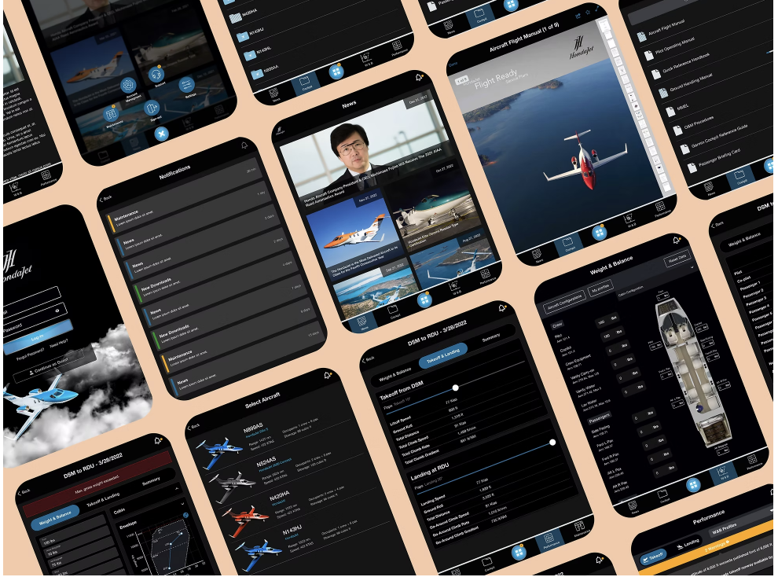Team
- Project Manager
- UI/UX Designers
- Developers
- Testers
Key Contributions
- Competitor Research
- User Research
- User Testing
- Interaction Design
- Interface Design
- Prototyping
Tools Used
- Adobe Photoshop
- Figma
- Adobe Illustrator
Design Process
Step 1 Define: Why do we need an iPad application for HondaJet pilots?
- Traditional flight manuals, charts, and files were extremely bulky and heavy
- The ability to connect to a wireless network, allows the files and information for pilots to stay up to date without excessive interference
- The ability to conduct performance calculations with ease in one all-inclusive platform
- To standardize the experience of all HondaJet pilots and provide a new layer of functionality and competitive advantage for consumers
Goals
- What would a successful iPad pilot cockpit application entail?
- Ability for HondaJet pilots to have easy and intuitive access to essential cockpit files and information.
- Ability for HondaJet pilots to monitor and receive alerts on essential aircraft measurements and data.
- Ability for pilots to calculate and compute necessary aircraft data.
- Ability to receive automatic updates on necessary HondaJet documentation, flight information, and other important alerts.
Step 2 Learn: User Research
Goals for User Research
- Familiarize ourselves with the current workflow of a HondaJet pilot without an iPad and identify areas for improvement.
- Learn what flight and aircraft features are essential for effective pilot operations.
- Understand pilot habits and determine how a cockpit application could enhance or supplement their experience.
- Explore the utility of existing iPad cockpit applications and how private jet pilots utilize them.
User Research Strategy
Interviews
- Conducted in-depth interviews with HondaJet pilots to understand daily workflows and pain points.
- Interviewed private jet pilots using existing iPad cockpit applications to gather insights on:
- Improved efficiency and reduced user frustration.
- Common issues and challenges in their user flows.
- Personal suggestions for feature improvements and enhancements.
Surveys
- Sent surveys to HondaJet pilots to gather data on flight experience pain points without a cockpit application.
- Collected feedback from private jet pilots to assess the strengths and weaknesses of existing iPad cockpit applications.
Competitor Analysis
When conducting user research with other private jet pilots, we found that the two most common cockpit applications were:
- 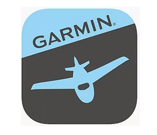Garmin Pilot
- Foreflight by Boeing
Key Insights
-
Insight 1
Most existing cockpit technology needs to be supplemented not replaced. During our user research, we learned that the HondaJet aircrafts come built in with very robust and capable Garmin instruments that take care of many necessary functions including weather mapping, airport communication/management, and route planning. These functionalities did not need to be included in the cockpit application, but a few pain points that we did observe came in terms of:
- ability to easily view performance data during takeoff/landing and give immediate alerts when issues arise
- conducting weight and balance calculations
- reviewing necessary pdfs and files for in-flight functionality, planning, and referencing
- reviewing necessary updates for changes to various relevant files, manuals, and maps
-
Recommendation 1
Our cockpit application must have dedicated sections for each of these main features:
- cockpit files (that must be easily navigable and automatically update when necessary)
- weight and balance calculations
- aircraft performance data during takeoff and landing
-
Insight 2
User interface must be easily navigable during stressful situations. During our user research, we learned that both HondaJet and other private jet pilots need to be able to quickly access various vital information and documents and this was done most successfully when they had instruments or applications that had an intuitive, familiar, and easy to understand interface.
-
Recommendation 2
The user experience of the cockpit application must be extremely intuitive with:
- clearly defined sections
- straightforward navigation
- familiar layout and design to existing pilot applications and tools
- ability to switch between screens and sections with ease
-
Insight 3
HondaJet has specific requirements. During our user research, we learned that HondaJet pilots have very specific requirements that are specialized to their brand of aircraft. They need to receive specific information that pertains to the company as a whole and updates regarding various aircraft updates and changes.
-
Recommendation 3
We need to include a news section in the application to allow HondaJet pilots to keep up with relevant information about the company, their aircraft, and upcoming company changes.
Key Insights Summary
- Insight 1: Supplement existing cockpit tech.
- Insight 2: Ensure easy navigation under pressure.
Pilot Interviews
In our interviews, we asked these pilots what they liked about each of these applications and what really stuck out in terms of the overall design and functionality.
We have listed the main findings below:
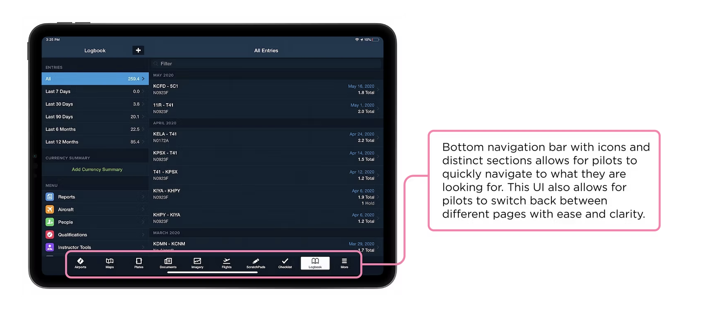 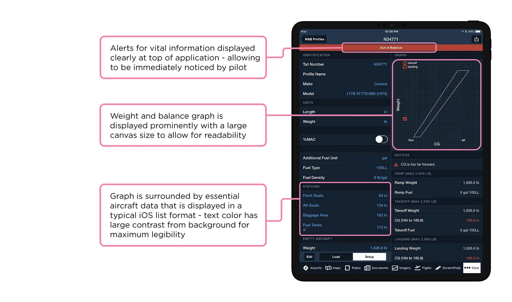 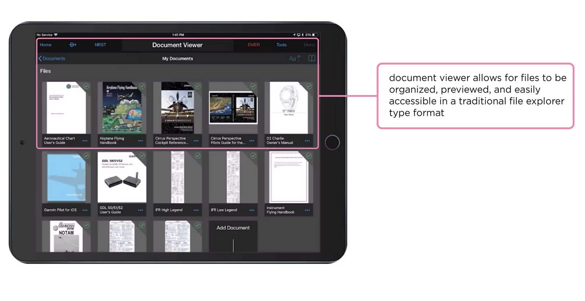 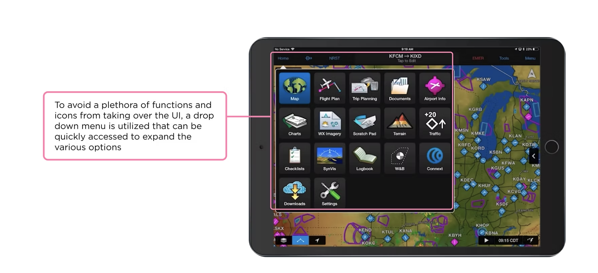Step 3 Ideate:
Outlining the Solution
Based on our user research and competitor analysis, we identified four main functions for the HondaJet iPad cockpit application:
- News Feed - Stay updated with important HondaJet-related news and articles.
- File Explorer & Document Viewer - Access flight manuals, maps, and critical documentation with ease.
- Weight & Balance Calculator - Perform essential weight and balance calculations for safe flight travel.
- Performance Page - Monitor key flight metrics including airport info, weather, speed, and configuration.
Step 4 Create:
Sketching Low Fi wireframes
Post User Research
After conducting our user research, we created low-fidelity wireframes to visualize the layout and functionality of the cockpit application. These wireframes served as a foundation for our design process.
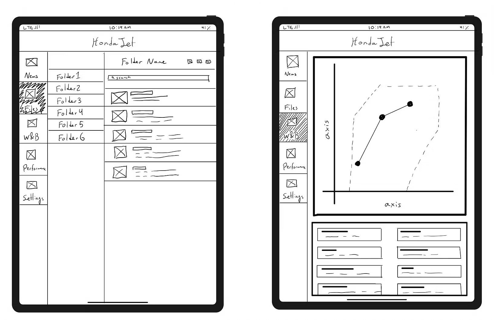 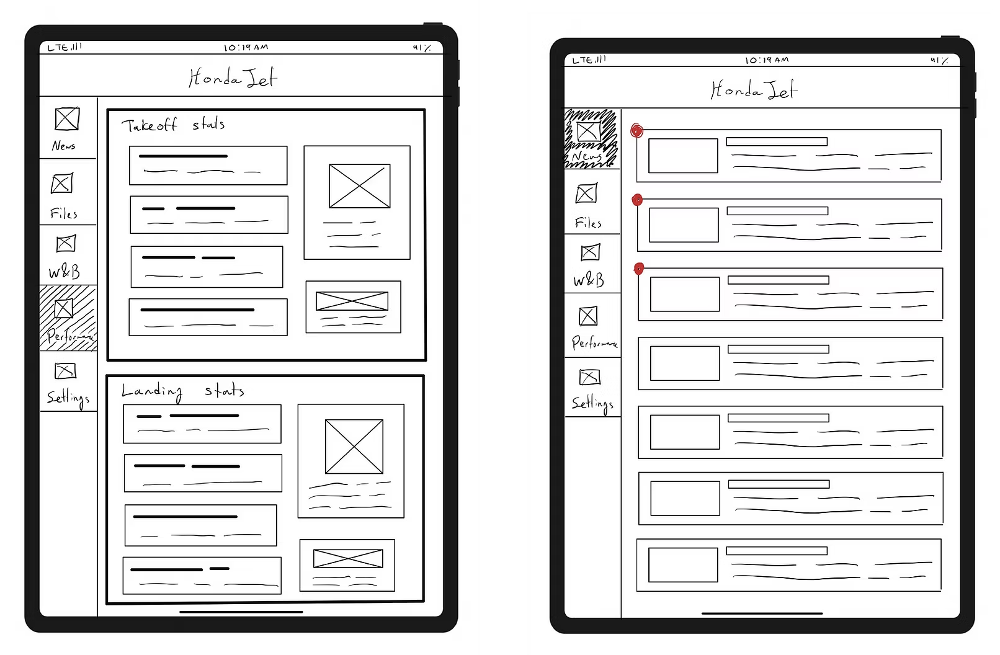Step 5 Verify:
Creating Low Fi Prototypes
Post User Testing
Utilizing the original wireframes, we conducted user testing with HondaJet pilots to determine what pain points they were able to find within the interface that we loosely mocked up. We took those findings and thought through and designed new UI and UX elements to more closely match the needs of the pilot. We mocked up our second iteration of designs with Figma and created a more robust lo-fi prototype to share with HondaJet.
Finalizing Application Designs
Post Final Edits
After one final round of user testing, we took our lo-fi prototypes and really ensured that we had solved any user pain points and functionality shortcomings. Through various iterations, we were able to create a seamless, effective user interface and experience that perfectly aids a HondaJet pilot with all of the various tasks and functions that they would need during a routine flight. The final screen designs are shown below:
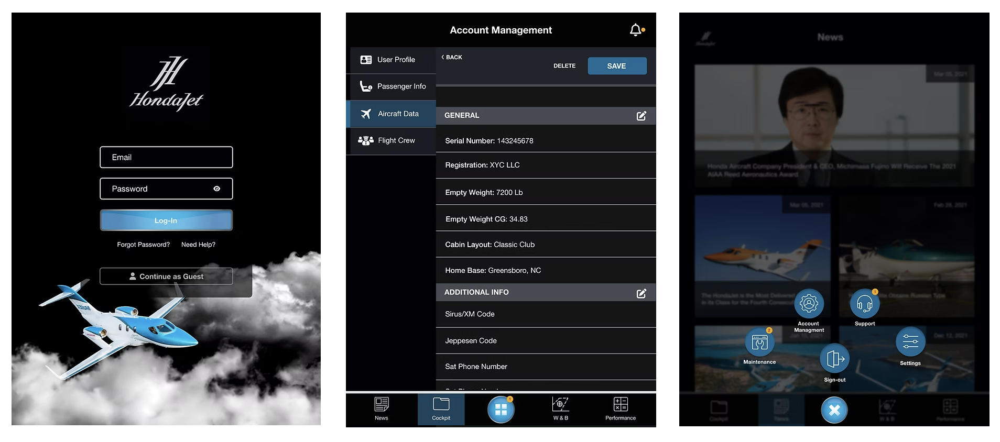 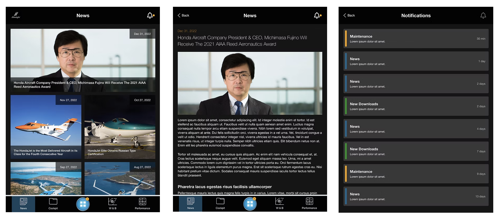 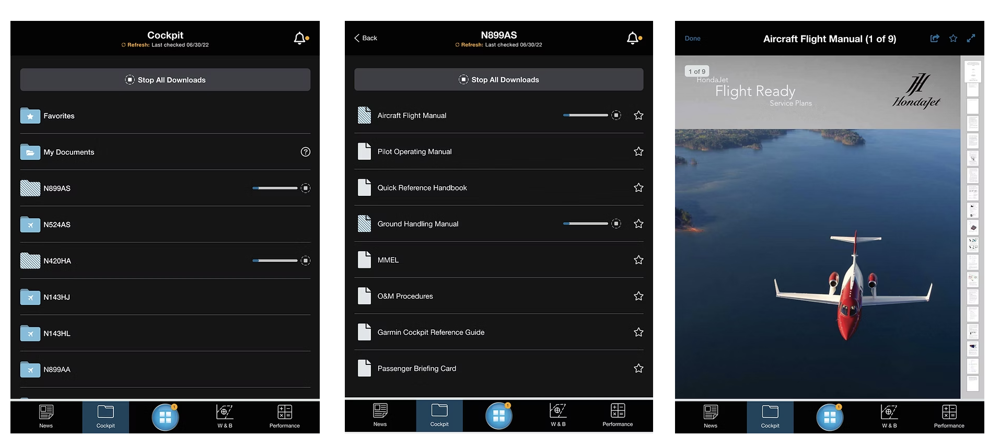 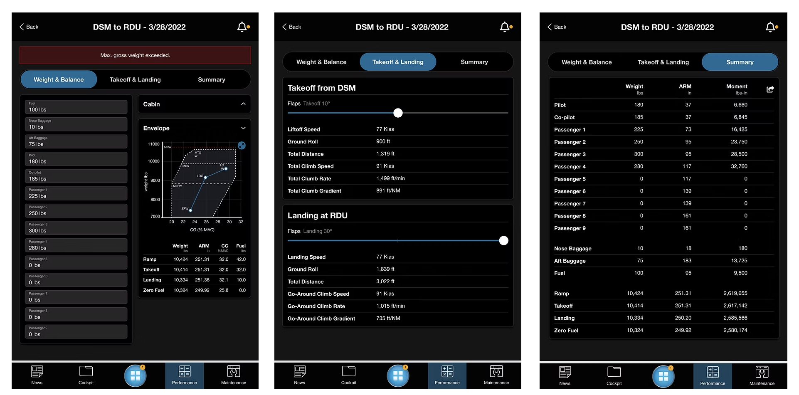 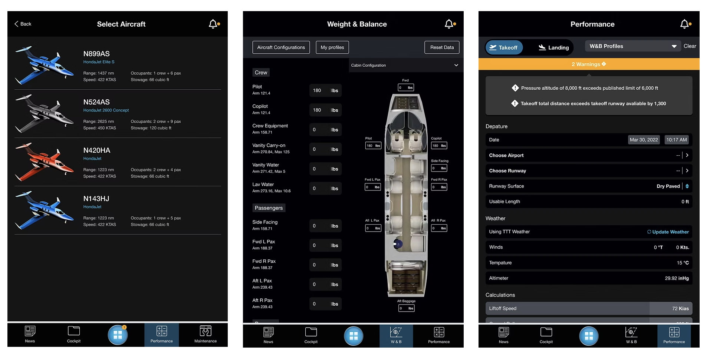